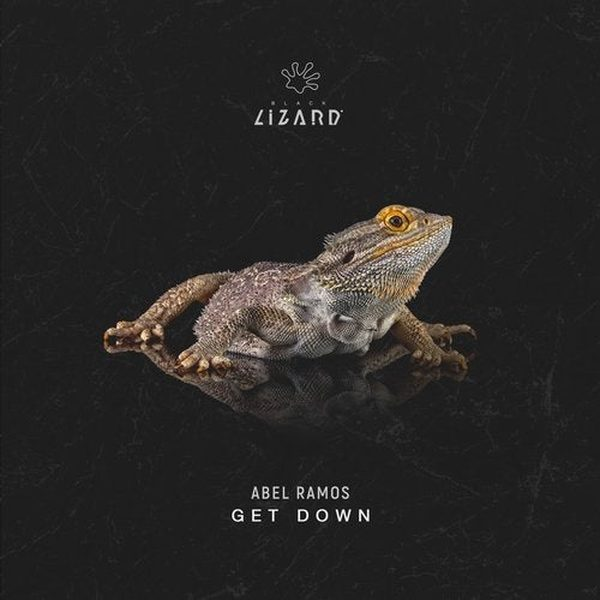

I 23 dischi
 1
On My Mind (Purple Disco Machine Remix)Diplo, SIDEPIECE, Purple Disco Machine
1
On My Mind (Purple Disco Machine Remix)Diplo, SIDEPIECE, Purple Disco Machine
 2
Remember Me (David Penn Extended Remix)Blue Boy, David Penn
2
Remember Me (David Penn Extended Remix)Blue Boy, David Penn
 3
Pump up the Jam (Nightfunk Remix)Technotronic
3
Pump up the Jam (Nightfunk Remix)Technotronic
 4
Bando (Endor remix)Anna
4
Bando (Endor remix)Anna
 5
Holding On (Cassimm Extended Remix)Milk & Sugar, Eddie Amador
5
Holding On (Cassimm Extended Remix)Milk & Sugar, Eddie Amador
 6
Rabbit Hole (Solardo Remix)CamelPhat, Jem Cooke & Solardo
6
Rabbit Hole (Solardo Remix)CamelPhat, Jem Cooke & Solardo
 7
Keep The Love (Tom Staar Extended Remix)Money Chocolate feat. Sarah Webb
7
Keep The Love (Tom Staar Extended Remix)Money Chocolate feat. Sarah Webb
 8
You Are My LifeChocolate Puma, Mike Cervello
8
You Are My LifeChocolate Puma, Mike Cervello
 9
Good FeelingsMartin Ikin
9
Good FeelingsMartin Ikin
 10
Waiting On My LoveKryder & Tom Staar feat. EBSON
10
Waiting On My LoveKryder & Tom Staar feat. EBSON
![Simon Fava & Yvvan Back — Sway (Mucho Mambo [Me & My Toothbrush Remix])](https://cdn-images.dzcdn.net/images/cover/79d555f76bcc815c44b9d6f275375b1b/250x250-000000-80-0-0.jpg) 11
Sway (Mucho Mambo [Me & My Toothbrush Remix])Simon Fava & Yvvan Back
11
Sway (Mucho Mambo [Me & My Toothbrush Remix])Simon Fava & Yvvan Back
 12
Breaking Me (HUGEL Remix _ Extended Mix)Topic, A7S
12
Breaking Me (HUGEL Remix _ Extended Mix)Topic, A7S
 13
Body PopDisco Fries
13
Body PopDisco Fries
 14
Shout it outCristian Marchi & Luis Rodriguez feat. Max'C
14
Shout it outCristian Marchi & Luis Rodriguez feat. Max'C
 15
Dance With MeMorsy & Proper Villains
15
Dance With MeMorsy & Proper Villains
 16
The RaverMilk Bar & F3d3 B
16
The RaverMilk Bar & F3d3 B
 17
Rave MachineRowetta, Oliver Heldens
17
Rave MachineRowetta, Oliver Heldens
 18
Hypnotized (Loods Remix)Purple Disco Machine & Sophie and the Giants
♪
19
The Jungle (Revuelta Records)(OEK)Javi Reina
18
Hypnotized (Loods Remix)Purple Disco Machine & Sophie and the Giants
♪
19
The Jungle (Revuelta Records)(OEK)Javi Reina
 20
1,2 StepMoreno Pezzolato, Kevin McKay
20
1,2 StepMoreno Pezzolato, Kevin McKay
 21
She call mePietro Cavazza
21
She call mePietro Cavazza
 22
El JackSiwell ft. Gianni Ruocco, Le Roi Carmona
22
El JackSiwell ft. Gianni Ruocco, Le Roi Carmona

23 Get DownAbel RamosLa tracklist
- 1 On My Mind (Purple Disco Machine Remix) Diplo, SIDEPIECE, Purple Disco Machine FFRR
- 2 Remember Me (David Penn Extended Remix) Blue Boy, David Penn Altra Moda Music
- 3 Pump up the Jam (Nightfunk Remix) Technotronic ARS Entertainment N.V
- 4 Bando (Endor remix) Anna APG Inc – FF10
- 5 Holding On (Cassimm Extended Remix) Milk & Sugar, Eddie Amador Milk & Sugar Recordings
- 6 Rabbit Hole (Solardo Remix) CamelPhat, Jem Cooke & Solardo RCA Records
- 7 Keep The Love (Tom Staar Extended Remix) Money Chocolate feat. Sarah Webb Subliminal
- 8 You Are My Life Chocolate Puma, Mike Cervello Axtone Records
- 9 Good Feelings Martin Ikin Sola
- 10 Waiting On My Love Kryder & Tom Staar feat. EBSON Axtone Records
- 11 Sway (Mucho Mambo [Me & My Toothbrush Remix]) Simon Fava & Yvvan Back Enormous Tunes
- 12 Breaking Me (HUGEL Remix _ Extended Mix) Topic, A7S Intercord
- 13 Body Pop Disco Fries Hysteria Records
- 14 Shout it out Cristian Marchi & Luis Rodriguez feat. Max'C Mind The Floor
- 15 Dance With Me Morsy & Proper Villains Sink or Swim
- 16 The Raver Milk Bar & F3d3 B Total Freedom Recordings
- 17 Rave Machine Rowetta, Oliver Heldens Toolroom Records
- 18 Hypnotized (Loods Remix) Purple Disco Machine & Sophie and the Giants Columbia Local
- 19 The Jungle (Revuelta Records)(OEK) Javi Reina Revuelta Records
- 20 1,2 Step Moreno Pezzolato, Kevin McKay Glasgow Underground
- 21 She call me Pietro Cavazza Flashmob Records
- 22 El Jack Siwell ft. Gianni Ruocco, Le Roi Carmona Tropica Records
- 23 Get Down Abel Ramos Black Lizard Records